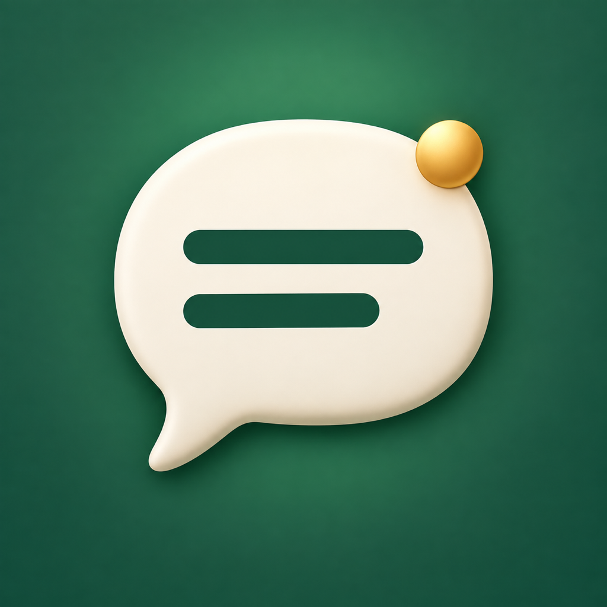

SAY CLEARLY
Say it with
confidence.
Turn a name, email, or reference number into words you’re comfortable saying.
One letter at a time.
Start with NATO spelling words. Choose familiar alternatives, hear each word, and save spellings for your next call. A large-text reading view helps you keep your place.
Designed for iPhone and iPad. Spelling words and pronunciation audio are in English. Alternative words are intended for everyday conversations, not formal NATO procedures.
Try it. Then make it yours.
Start the free 14-day Trial in the app to use all features. The trial starts when you confirm the free purchase with Apple and lasts 14 consecutive days.
After the trial, Say Clearly Forever unlocks all features with a one-time US$9.99 purchase in the U.S. Local prices vary and appear in the app before purchase. No subscription. No automatic charge.
When the trial ends, converting, choosing words, audio playback, call view, and saving require the permanent unlock. Your existing saved items remain available to view, export, or delete. Restore purchases with the same Apple Account; restoring a trial keeps its original end date.
Here to help.
For support, feedback, or privacy questions, email eu8929@gmail.com. Include your app version and iOS version. Please don’t send passwords, private reference numbers, or other sensitive text.
How do I restore my purchase?
Open the information button on the Spell tab, or the access screen shown at launch, then tap Restore purchases. Use the Apple Account that started the trial or bought the permanent unlock.
Can I use it during a call?
Call view is a large-text reading aid. Say Clearly does not make, join, or record calls. Audio may be unavailable or interrupted during a phone call; you can still read the words yourself.
Where are my saved spellings?
They are stored locally on your device. There is no built-in cloud sync between devices. Your device’s normal backup may include them. Keep your own copy of important information.
PRIVACY POLICY · EFFECTIVE OCTOBER 3, 2026
Your words stay with you.
Say Clearly is developed by Zhe Wu. The developer does not collect your typed text, saved spellings, word preferences, or speech audio. The app has no developer-operated account system, server, advertising SDK, analytics SDK, or tracking.
Text and local storage
Text you type or paste is processed on your device. The app reads clipboard content only when you use the system Paste control. Unsaved text is temporary. Explicitly saved spellings and word preferences are stored in the app’s protected local files and may be included in normal device backups.
Pronunciation
Audio is generated with Apple’s system speech synthesizer using an available English voice. The app does not record speech or request microphone access. It does not send your spelling text to a developer service.
Purchases and trial access
Apple processes the free trial and permanent unlock through the App Store. The app reads Apple-verified purchase status and the original trial purchase date on your device to determine access. The developer does not receive your payment card details or run a purchase-validation server. Apple may process purchase information under its own privacy policy.
Sharing and external services
If you choose Share or Export, the text is passed to the app or destination you select. Support and privacy links open a website in your browser. This page is hosted by GitHub Pages, which may process standard web request information under GitHub’s privacy policy. If you email support, the developer receives the information you include and uses it to respond to your request. Do not include sensitive spelling content unless necessary.
Deleting your data
Swipe left on a saved item to delete it. Restore a preferred letter to its NATO default to remove that preference. Uninstalling the app removes its local library; copies in backups or exported elsewhere must be removed separately. Apple’s purchase history is managed by Apple and is not erased by uninstalling. No purchase is required to view, export, or delete existing saved items after trial expiry.
Changes and contact
This policy and the App Store privacy disclosure will be updated if the app’s data practices change. For privacy questions, contact eu8929@gmail.com.
Terms of use
Say Clearly is licensed under Apple’s standard End User License Agreement. The app is a spelling aid. Confirm important information with the person listening. Available alternatives and pronunciation do not guarantee error-free transcription.